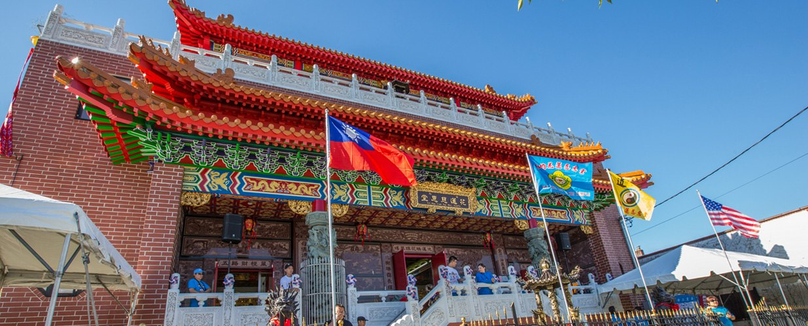

紐約花蓮慈惠堂由來Our History
紐約花蓮慈惠堂成立於1991年，由何俊忠居士創辦，老堂主何游阿粉女士十幾年的耕耘，再由現任的堂主何春燕接任後，才有今日的莊嚴道場。New York Hua Lian Tsu Hui Temple was founded in 1991 by Mr. Ho Chun-Chung. After more than ten years of devoted work by the former head, Mrs. Ho Yu A-Fen, leadership passed to the current head, Ms. Ho Chun-Yen, under whom the temple has become the dignified place of worship it is today.
創堂初期，何俊忠居士於紐約法拉盛羅斯福路開堂設教，弘揚聖命，金母賜名「紐約花蓮慈惠堂」。母娘慈恩濟世，受惠信眾口耳相傳，四方慕德投歸法座的信眾紛至沓來，與日俱增，西元2002年乃遷至法拉盛大學點大道，不旋踵。西元2007年金母揮鸞指示「盡早興建宗教文化道場，舉辦社會公益活動」，是時立願效勞和隨修信徒眾多，聞訊四出尋訪，終在2008年在母娘顯靈與貴人張善良先生結緣下尋得一寶地於大學點龍頭地段有片空地，正是金母靈示之建廟用地，得信徒鼎力捐輸，福蒙金母神威之福應，終於購下這片土地。In its early days, Mr. Ho Chun-Chung opened the temple on Roosevelt Avenue in Flushing to spread the Mother's teachings, and the Golden Mother named it New York Hua Lian Tsu Hui Temple. As word of the Mother's compassion spread, devotees came from all directions in growing numbers, and in 2002 the temple moved to College Point Boulevard. In 2007 the Golden Mother instructed, through divine writing, that a religious and cultural center be built as soon as possible and that the temple hold charitable activities for the community. Many devotees vowed to help and searched far and wide. In 2008, through the Mother's manifestation and a fortunate meeting with Mr. Chang Shan-Liang, they found a vacant lot at a prime location in College Point — the very site the Golden Mother had indicated. With the devotees' generous donations and the Mother's blessing, the land was purchased.
只是，2009年建堂之初，困難重重和外來的壓力，和美國工程學上的種種規定和申請上的困難，在母娘的顯靈下突然來了一位建商Peter Chen聞建廟之聲，一呼百應，在Peter Chen的帶領下，立刻開工破土正式動土興工，擇善固執、外柔內剛的何堂主自感肩負重任，日日親自帶領師兄師姐看守廟地，她視建廟乃是一種信心的考驗與殊榮，這種為芸芸眾生創設靈修聖地而不畏艱難的精神贏得眾多信徒效法，皆抱以感恩、回饋的真情，承受辛苦而無怨無悔。When construction began in 2009, the temple faced many obstacles: outside pressure, American engineering regulations and a difficult permit process. Then, through the Mother's manifestation, a builder named Peter Chen heard of the project and answered the call. Under his leadership ground was broken and construction began. Ms. Ho, gentle in manner but firm in resolve, felt the weight of this responsibility and led the brothers and sisters every day in watching over the site. She saw building the temple as both a test of faith and an honor, and her determination to create a sacred place for all people, whatever the hardship, inspired many devotees, who gave their gratitude and effort without complaint.
誠如母娘諭示「關關難過關關過」，集何堂主與信眾一心之努力，本堂興建工程終於完竣，並於西元2012年國曆6月13日（農曆4月24日）入廟，舉辦 瑤池金母安座大典，完成一所在美東唯一的東方建築的宗教聖殿，同時樹立一所啟迪世人智慧，承神恩無遠弗屆，信仰功果均霑濡，九生十類皆受惠。As the Mother taught, “every barrier is hard, yet every barrier is passed.” Through the united effort of Ms. Ho and the devotees, construction was completed, and on June 13, 2012 (the 24th day of the 4th lunar month) the temple held the enthronement ceremony of the Golden Mother of the Jasper Pool — completing the only sacred hall of traditional Eastern architecture on the US East Coast, a place to enlighten the world, through which divine grace reaches far and all living beings receive its blessing.
位居皇后區大學點上的紐約花蓮慈惠堂坐擁城市都會中為一絕佳的地理福地。Located in College Point, Queens, the temple enjoys an exceptionally auspicious site in the heart of the city.
依台灣名師設計而建的紐約花蓮慈惠堂雄偉壯觀，殿脊銅瓦覆頂，脊昂高翅，在中更顯富麗莊嚴，靈氣十足，拾級而上，爐煙觸目，清香四溢，讓人一洗風塵，實有絕殊離俗之感。Designed by a renowned Taiwanese master, the temple is grand and majestic, its ridges roofed in bronze tiles with soaring upturned eaves, rich, solemn and full of spiritual energy. Climbing the steps, one sees incense smoke rising and smells its fragrance — the dust of the world falls away, and one feels truly removed from the ordinary.

- 1991於法拉盛羅斯福路開堂設教Temple opens on Roosevelt Avenue, Flushing
- 2002遷至法拉盛大學點大道Moves to College Point Boulevard
- 2007金母揮鸞指示興建宗教文化道場The Golden Mother instructs that a temple be built
- 2008於大學點購得建廟用地Land purchased in College Point
- 2009建堂動土興工Construction begins
- 2012國曆6月13日（農曆4月24日）瑤池金母安座大典Enthronement ceremony, June 13, 2012
線上點燈和法會報名Lamp & Ceremony Registration
點燈、法會可以線上報名，送出後帶繳費單到堂裡繳交現金。Register online, then bring your payment slip to the temple and pay in cash.